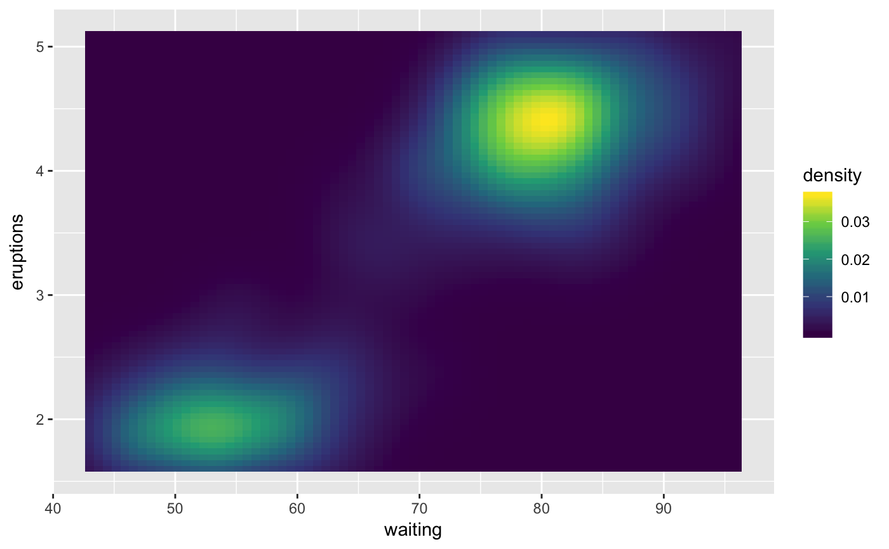
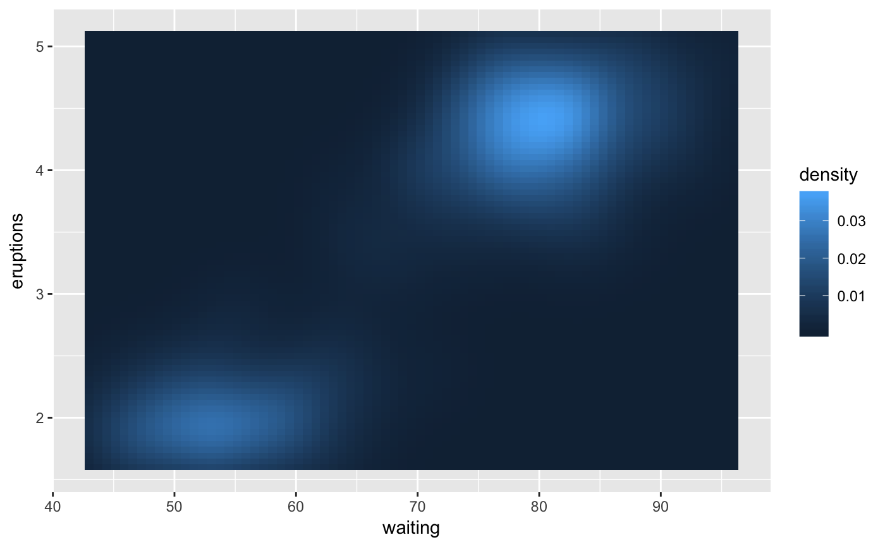

Colour scales for continuous data default to the values of the
ggplot2.continuous.colour and ggplot2.continuous.fill options. If these
options are not present, "gradient" will be used. See options() for more
information.
scale_colour_continuous(..., type = getOption("ggplot2.continuous.colour", default = "gradient")) scale_fill_continuous(..., type = getOption("ggplot2.continuous.fill", default = "gradient"))
Arguments
| ... | Additional parameters passed on to the scale type |
|---|---|
| type | One of "gradient" (the default) or "viridis" indicating the colour scale to use |
See also
scale_colour_gradient(), scale_colour_viridis_c(),
scale_fill_gradient(), and scale_fill_viridis_c()
Examples
v + scale_fill_continuous(type = "gradient")v + scale_fill_continuous(type = "viridis")v + scale_fill_viridis_c()